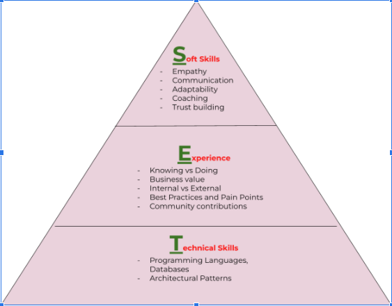

Often, career growth is measured by movement up the management ladder.
This post is for you. This framework will assist you along your career path and is derived from discussions around career trajectory with current technology leaders.
This post is not intended to discourage anyone from pursuing a management role. Every role has a unique purpose, and if management interests you, then go for it. This post is intended to spur an alternate thinking if you do want to continue as a contributor. While this framework can be used by any professional , this post is focused specifically on technology leaders
Most conventional organizations tend to provide career growth opportunities through management positions. As an organization evolves to be more technology oriented, senior technology roles do open up.
A typical technology ladder in a company will look similar to the path below:
Associate (&Sr) -> Staff(&Sr) -> Principal(&Sr) -> Distinguished
During the initial phases of your career,promotions tend to come easier. As you move up, promotions become more difficult. . Roles and responsibilities tend to get broader and broader with no clear guidelines. You are now a thought leader in your field and this comes with an innate amount of responsibility.
The below SET Framework will help you evaluate how to approach your career when you are at a crossroads. Think about your current role and your direction, identify the strengths and weaknesses you bring to each of these pillars.
This evaluation of strengths and weaknesses will help guide you to your next steps.

Soft skills are the most important in any management ladder or technology leadership role. While soft skills are often attributed to management roles, as you progress into technology leadership, it is important to grow your soft skills. Some key attributes every organization looks for in their leaders are empathy, communication, adaptability, coaching and trust building
While everyone is capable of these skills, the skill level differs based on how well you have trained and practiced them..
If the answer to all the ABOVE is YES, then you have all the indicators of being a leader - be it people management or technology skills. In fact, based on several surveys, lack of soft skills play a key role in careers falling stagnant.
Most often we think experience comes with “DOING”. While it is certainly true that DOING provides more expertise, ,the key is “KNOWING” how to get the information, which plays a crucial role converting a contributor to a technology leader.
Some questions to ask if you currently have / can gain the experience.
The core of being a technology leader is having expert level knowledge in key technologies. For example, programming language basics - expert level in FORTRAN will help you learn any new languages faster even 50 years from now.
The same goes with database concepts, cloud computing concepts, architecture patterns etc.,
Most likely early on in your career you tend to focus on these core technical skills. Technology is ever evolving and technologists should be committed to learning as your career progresses.
Some final thought on anyone embarking in this journey:
If you have the above goals in mind, the sky’s the limit! .
So many of our dreams at first seem impossible, then they seem improbable, and then, when we summon the will, they soon become inevitable.” — Christopher Reeve.
Any questions, comments or suggestions please reach out to kanch@cloudrace.info.
Special Thanks to for their review / edits and suggestions Lara Norman, Chris Ricci